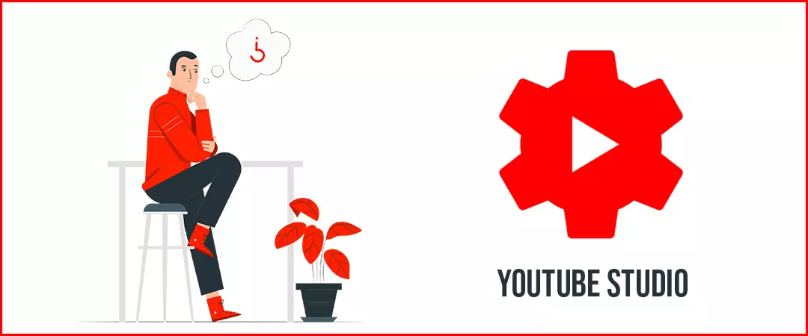
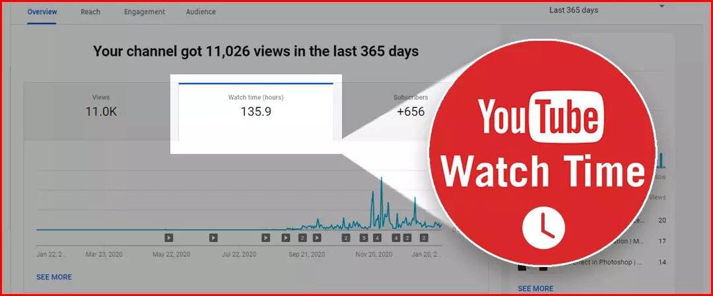
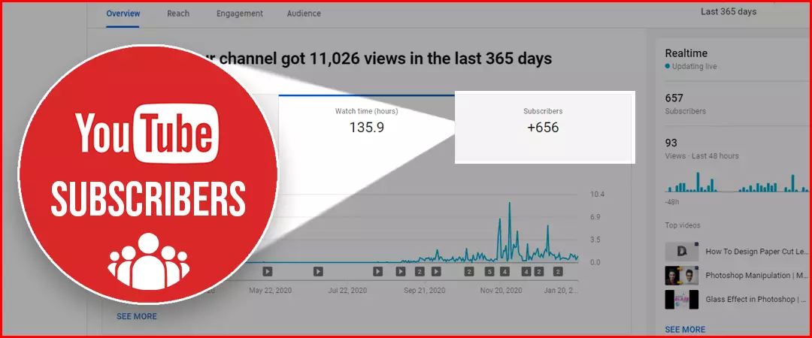
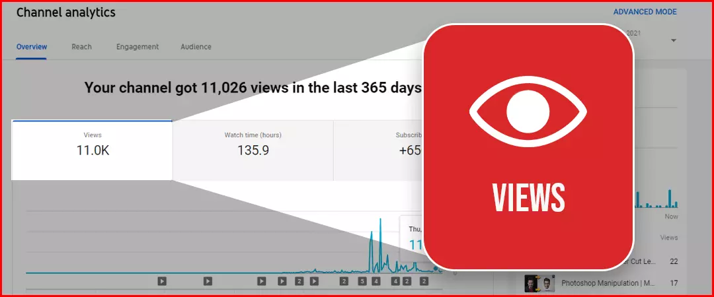
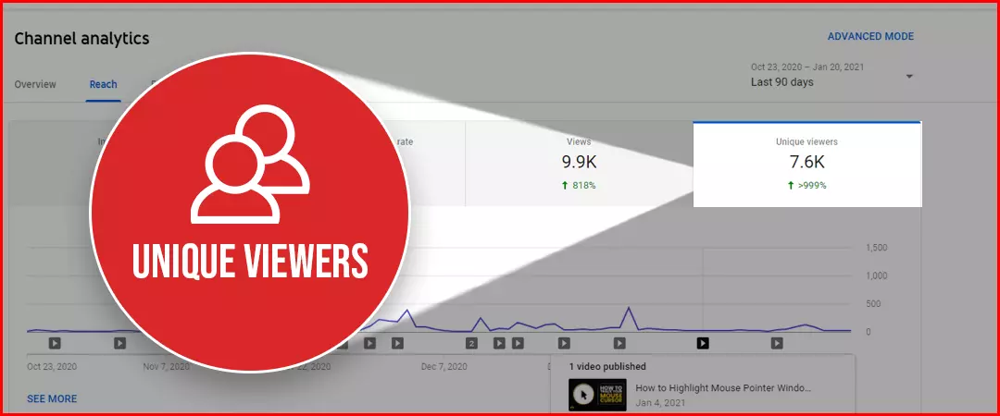
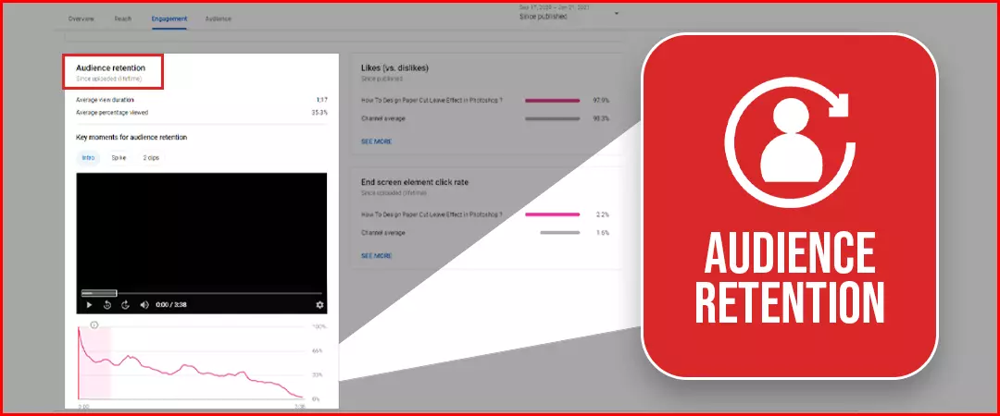
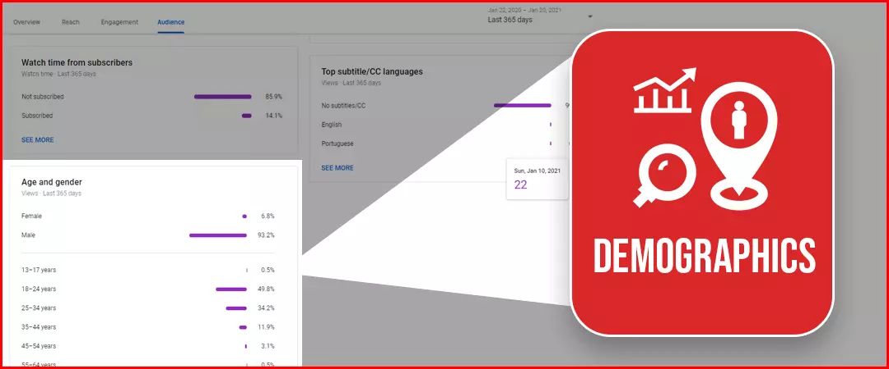
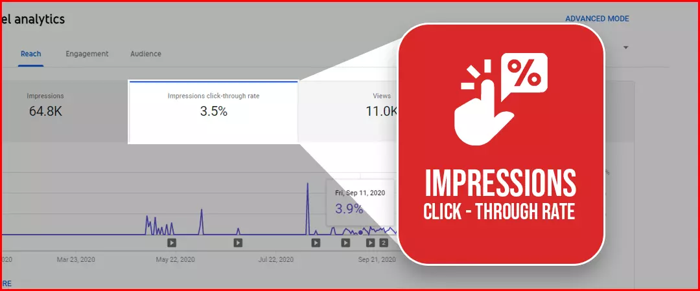
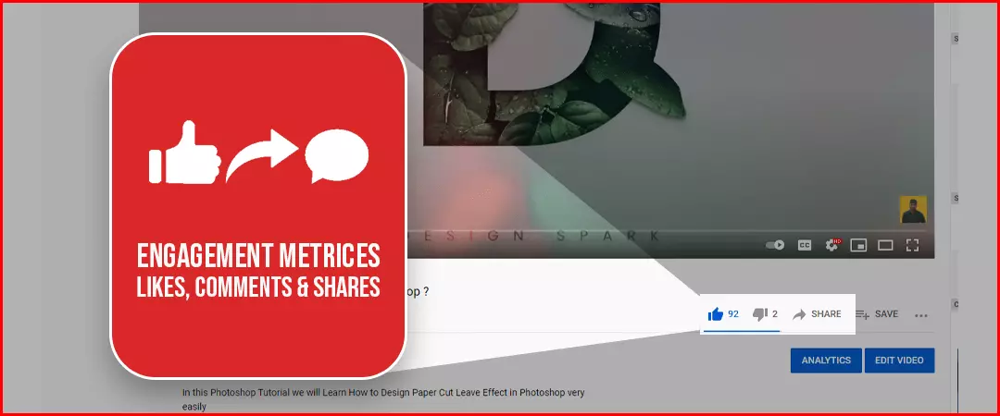
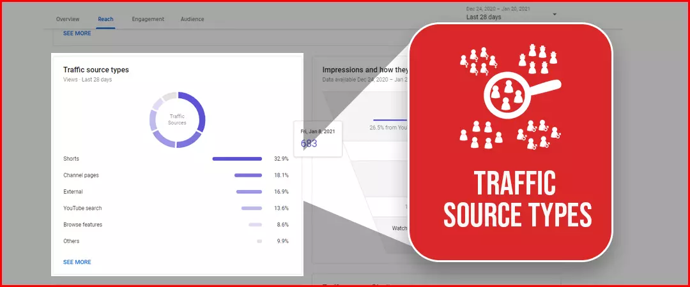

The most important in refining your Youtube marketing strategy is the correct use YouTube Analytics.
“How can I make my YouTube videos engage more?”
But why is this important?
Analysing your Youtube insights in the YouTube video Analytics allows you to understand whether your efforts and YouTube marketing is working for you or not. It helps you tweak and optimize your strategy in order to achieve the desired results. It helps you understand what works and what don’t’! Hence, making an informed decision in the form of an insight from YouTube analytics is essential.
When you master analysing Youtube Channel Analytics, you learn how to create the most effective strategies to grow your Youtube channel by gaining likes, comments, shares and subscribers. You come to know what type of topics are working for you, what length of video working, what timings are best for posting, you should focus on which gender more , which language, which trend and more!
Many youtubers don’t dive into Youtube analytics and like youtube subscribers buying to instead, that are real people, to grow their channel organically.
In this blog, we will discuss how and what youtube analytics metrics you should track in order to get the best out of your YouTube channel. Now let’s deep dive into it.
YouTube Channel analytics explained in great detail
How can I see channel analytics in YouTube?

Step 1- Sign into your YouTube account and head to YouTube Studio
Step 2- Select Analytics from the left-hand side menu of Channel Dashboard
Step 3- Now select the duration for which you would like to see insights and get started!
Step 4- Once you land on YouTube channel analytics, you will see the following:
- Overview
- Reach
- Engagement
- Audience
- Revenue
You can switch between these categories and explore the different metrics Youtube allows you to track!
Step 5- Now if you look towards the top right corner, you will find the option of Advanced Mode. From here you can get a much more detailed report of your video metrics.
Step 6- From Advanced Mode, you can head to Compare To (again, in the top right corner). This allows you to compare your performance of your YouTube channel year per year and much more.
Once you explore all the metrics YouTube has to offer to be tracked, it is only natural to feel a tad overwhelmed and confused as to what metrics should be tracked and what those Youtube metrics entail for the performance of your YouTube channel.
Keep reading as I breakdown the important metrics you should definitely be tracking in your youtube studio analytics…
What metrics should I track to measure my progress?
Watch Time

This youtube analysis metric shows the total duration (in hours) for which your videos have been watched. This metric shows the cumulative figure. This metric helps you understand whether you audience is actually interested in watching your content or not. Watch time helps you decide which topics are worth making more videos with respect to your audience interests. More watch time definitely means that your viewers are loving your content and hence you will be an informed decision maker that which are those ‘cool topics’ on which you should be making videos. This metric is crucial when it comes to measuring engagement on your Youtube channel as well as your channel ranking in SERPs.
Subscribers

This is yet another crucial metric to determine your overall channel growth. By selecting a particular period (for example, last 28 days), you will be able to see how many subscribers your YouTube channel has gained or lost in that period. You should analyse your activity and videos topic during this period as it helps you understand what kind of content is making people subscribe / unsubscribe to your channel.
Views

This youtube channel analysis metric shows you the total number of times your videos have been watched by viewers, including multiple views from the same viewer. This metric is a great way for you to understand what kind of content viewers is most interested in. Again you can predict the future video topics by analysing your previous video topics that delivered great views in number. Select a duration and analyse whether the views have gone up or not for this prediction.
Unique viewers

Unique viewers are users who have watched your video once or more than once, i.e., generate multiple views. This YouTube analytics tool provides you an insight into the estimated size of your audience. As a powerful YouTuber, you should focus on this metric to maximize the unique viewers. Youtube SEO techniques can definitely help in this. By utilizing them, your videos will be in more ‘recommended videos’ and therefore chances will be more of acquiring more unique viewers.
Audience Retention

Audience Retention is the fraction of duration for which your viewers are watching the video out of total duration of the video. Under this metric, you will find Absolute Audience Retention and Relative Audience Retention. This metric helps you understand when and what aspects make a viewer opt out of your video. To increase your viewer’s audience retention, you can use pattern interrupts, some interesting facts, some lighting, camera angle changes and something to maintain the viewer’s interest.
Demographics

This metric gives you important insights into the age, gender and location of your audience. This helps you curate more audience- oriented content on your channel. After analysing the age, gender and location, you will be informed about what to deliver in the future. Thus, this becomes a key metric in shaping your content strategy and attract more such audience towards your Youtube channel.
Impressions Click Through Rate

Impression means when a viewer sees your video thumbnail. Impression click through rate indicates the percentage of viewers who are clicking on your video after seeing the thumbnail. Thus, this metric helps you understand how effective your Youtube thumbnail and video title are. If your impression click through rate is high, however, you audience retention is low, this indicates that your thumbnail and video title is misleading. YouTube algorithm can consider this as clickbait. You should always avoid clickbait.
Engagement Metrics- Likes / Dislikes, Shares, Comments

Likes / Dislikes provide an easy way for the viewer to express how they felt about a video.
Comments indicate that a video resonated with the viewer so much that they decided to share their opinion. Shares indicate that a viewer loved a video so much they are ready to have it on their behalf. Thereby, becoming a social proof for that Youtube channel.
These metrics help you understand the overall engagement on your channel. Moreover, likes / dislikes, comments and shares on a particular video help you understand the performance in the clearest light. Interact with your audience by acknowledging them.
Traffic Sources

YouTube Traffic Sources shows you how your viewers came across your video – did they find in Youtube SERPs or Google SERPs, or did they find it in embedded in a blog post, or from social media? When you understand from where your majority of audience is coming, you can curate a SEO strategy accordingly.
Average View Duration
The average view duration youtube metric indicates the average time viewers spent while watching your video / videos. It is calculated by dividing total watch time by total views. This metric helps you understand how well your video is able to engross a viewer in it. A higher average result in better ranking in the SERPs.
Once you understand what these metrics entail for the performance of your channel, you are all set to go! To conclude this blog, find what is common among your best performing videos, and stick to those practices. Similarly, find out what is common among your worst performing videos, and make sure you don’t repeat these practices again.
Bonus- Youtube analytics allows creators to measure metrics in different time periods (for example, last 28 days) and after latest update, it allows to measure metrics for the past 24 hours. This proves to be a valuable update as it allows you to check the performance of a live stream or a recently published video.
I hope you found this as an enlightening blog on how to analyse YouTube Analytics.
Feel free to share.